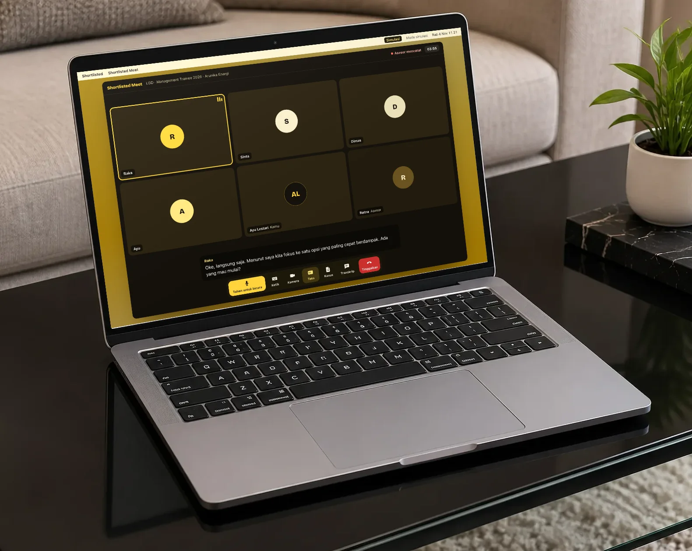

Raka
Dominan, suka memotong
"Sudahlah, sewa truk saja. Kita tidak punya waktu."
Akui poinnya dalam satu kalimat, lalu kembalikan ke alur: "Bisa jadi, Raka. Kita cek dulu angkanya, satu menit saja."
Latihan FGD, LGD, dan interview bareng empat peserta AI dan satu assessor. Jadi saat hari H tiba, rasanya seperti latihan ke-10, bukan yang pertama.
Untuk pelamar MT, BUMN, bank, dan graduate program dari kampus mana pun.

Tes tulis bisa dilatih sendiri. Interview bisa dilatih di depan cermin. FGD dan LGD tidak bisa: kamu butuh kelompok, dan orang yang tahu cara menilainya.
Mahasiswa di beberapa kampus punya senior dan alumni untuk mock session. Kebanyakan pelamar tidak punya. Shortlisted dibuat untuk mereka.
Pilih jawabanmu dan lihat rapornya berubah. Ini versi singkat dengan pilihan ganda. Di sesi sungguhan, kamu bicara bebas.
"Sudahlah, sewa truk saja. Kita tidak punya waktu."
Akui poinnya dalam satu kalimat, lalu kembalikan ke alur: "Bisa jadi, Raka. Kita cek dulu angkanya, satu menit saja."
"Itu klaim. Angka mana di kasus yang mendukungnya?"
Siapkan satu angka dari kasus untuk setiap pendapatmu. Sinta melunak begitu kamu menyebut fakta.
(Diam. Padahal dia sudah melihat risiko yang belum disebut siapa pun.)
Sebut namanya dan tanya pendapatnya. Assessor mencatat siapa yang memberi ruang bagi peserta yang pendiam.
"Semua ada benarnya. Kita gabung saja, ya?"
Sepakat terlalu cepat sama buruknya dengan tidak sepakat. Minta kelompok menyebut alasan sebelum memutuskan.
Bukan cuma apa yang kamu katakan, tapi kapan kamu bicara, siapa yang kamu tanggapi, dan apakah kelompok sampai pada keputusan.
Studi kasus gaya seleksi MT dan BUMN, dengan waktu baca terbatas.
Masing-masing punya watak sendiri. Kamu bisa mengetik atau bicara, dan mereka menanggapi namamu.
Nilai per aspek, kutipan ucapanmu, dan dua hal untuk dilatih berikutnya.
Bentuk hexagon menunjukkan profilmu: makin luas, makin kuat. Setiap nilai disertai kalimat yang kamu ucapkan sendiri. Rubriknya disusun dari aspek yang biasa dinilai assessor, dan sedang dikalibrasi bersama assessor dan HR.
Dimas, dari tadi belum bicara. Menurutmu bagaimana?Kamu memberi ruang bagi peserta yang diam. Berikutnya: usulkan keputusan sebelum menit kelima.
Ada AI yang membisikkan jawaban saat interview online. Itu tidak menolong di ruang seleksi, saat kamu duduk berhadapan dengan assessor dan tujuh pelamar lain. Shortlisted melatih kemampuanmu sendiri, jadi yang kamu bawa ke hari H adalah jam terbang.
Shortlisted sedang dibangun. Ikut pre-sale, dapat akses pertama, dan harganya terkunci. Kalau kami batal meluncurkan, uangmu kembali penuh. Detailnya ada di syarat pre-sale.
Mau coba dulu? Demo LGD bisa dimainkan sekarang, gratis.
ChatGPT bisa diajak bermain peran, tapi hanya satu suara, tanpa batas waktu, tanpa studi kasus gaya seleksi, dan tanpa rubrik penilaian. Shortlisted menjalankan empat peserta dengan watak berbeda dan memberi rapor per aspek.
Tidak, dan tidak ada yang bisa menjanjikan itu. Shortlisted membuatmu lebih siap lewat latihan yang mirip aslinya dan feedback yang jujur.
Demo LGD sudah bisa dimainkan, lengkap dengan suara peserta AI. Peserta pre-sale mendapat akses pertama ke versi lengkap. Tanggal peluncuran dikirim lewat email. Kalau peluncuran batal, uangmu kembali penuh.
Rekaman dipakai untuk membuat rapor, lalu dihapus otomatis setelah 30 hari kecuali kamu memilih menyimpannya. Baca selengkapnya di kebijakan privasi.
Undangannya masuk ke email, kamu bergabung ke meeting, lalu rapornya menyusul lewat email. Gratis, tanpa daftar.